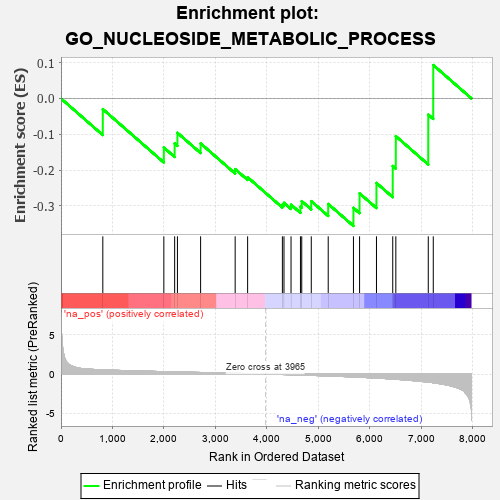
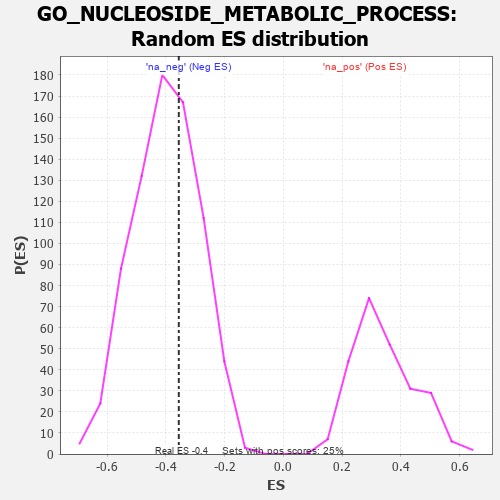

| | | Dataset | 7d |
| Phenotype | NoPhenotypeAvailable |
| Upregulated in class | na_neg |
| GeneSet | GO_NUCLEOSIDE_METABOLIC_PROCESS |
| Enrichment Score (ES) | -0.35597566 |
| Normalized Enrichment Score (NES) | -0.88890225 |
| Nominal p-value | 0.6317881 |
| FDR q-value | 0.9591109 |
| FWER p-Value | 1.0 |
Table: GSEA Results Summary

Fig 1: Enrichment plot: GO_NUCLEOSIDE_METABOLIC_PROCESS
Profile of the Running ES Score & Positions of GeneSet Members on the Rank Ordered List
| PROBE | GENE SYMBOL | GENE_TITLE | RANK IN GENE LIST | RANK METRIC SCORE | RUNNING ES | CORE ENRICHMENT | | 1 | UCK2 | | | 812 | 0.529 | -0.0298 | No |
| 2 | PRPS1 | | | 1997 | 0.305 | -0.1370 | No |
| 3 | EFL1 | | | 2207 | 0.276 | -0.1256 | No |
| 4 | GNMT | | | 2261 | 0.266 | -0.0959 | No |
| 5 | UCKL1 | | | 2711 | 0.197 | -0.1254 | No |
| 6 | PPAT | | | 3382 | 0.091 | -0.1972 | No |
| 7 | UPP2 | | | 3624 | 0.056 | -0.2199 | No |
| 8 | RAN | | | 4299 | -0.059 | -0.2965 | No |
| 9 | OPA1 | | | 4330 | -0.065 | -0.2914 | No |
| 10 | LRRK2 | | | 4467 | -0.087 | -0.2965 | No |
| 11 | ERH | | | 4650 | -0.128 | -0.3019 | No |
| 12 | MTAP | | | 4675 | -0.133 | -0.2868 | No |
| 13 | DLG1 | | | 4860 | -0.169 | -0.2868 | No |
| 14 | ENPP4 | | | 5189 | -0.245 | -0.2945 | No |
| 15 | PRPS2 | | | 5679 | -0.370 | -0.3054 | Yes |
| 16 | ADA | | | 5798 | -0.405 | -0.2649 | Yes |
| 17 | DLG2 | | | 6126 | -0.513 | -0.2359 | Yes |
| 18 | UMPS | | | 6442 | -0.637 | -0.1885 | Yes |
| 19 | MFN1 | | | 6502 | -0.663 | -0.1053 | Yes |
| 20 | DPYD | | | 7132 | -1.019 | -0.0451 | Yes |
| 21 | LRGUK | | | 7229 | -1.101 | 0.0933 | Yes |
Table: GSEA details [plain text format]

Fig 2: GO_NUCLEOSIDE_METABOLIC_PROCESS: Random ES distribution
Gene set null distribution of ES for GO_NUCLEOSIDE_METABOLIC_PROCESS